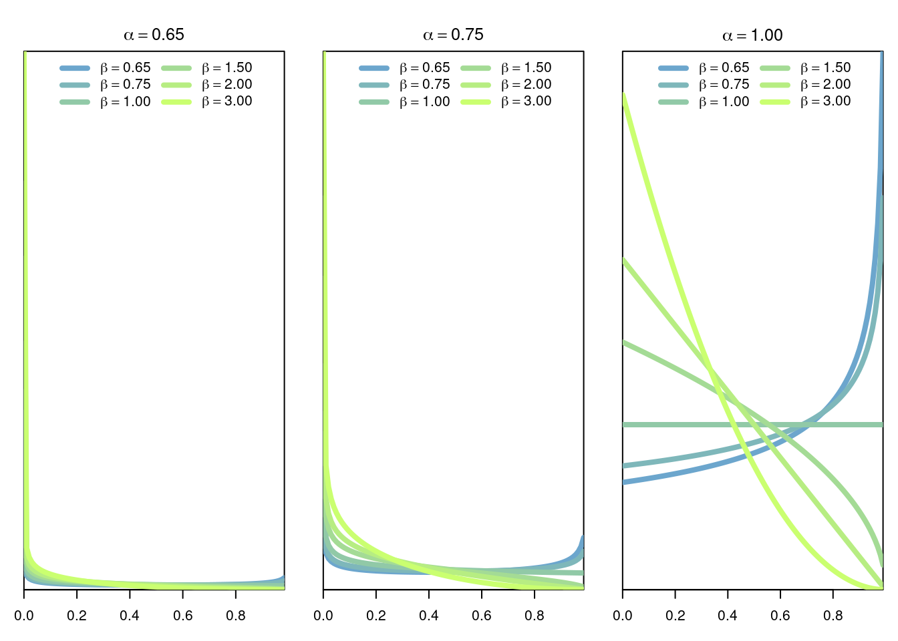

4 Normal Distribution
4.1 Definition
The normal distribution of parameters \(\mu\in\mathbb{R}\) (the mean) and \(\sigma>0\) (the standard deviation) is the continuous distribution with density \[ f(x \vert \mu,\sigma) = \frac{1}{\sigma\sqrt{2\pi}}e^{-\frac{(x-\mu)^2}{2\sigma^2}} \] 
4.2 Model
The normal distribution is one of the most central distributions. Thanks to the Central Limit Theorem this distribution appears everywhere, specially when the variables that we are modelling can be interpreted as averages over many copies of subyacent independent random variables. This also explains why a lot of work in statistics is specialized to the study of this distribution.